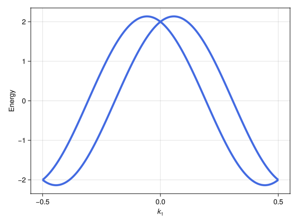
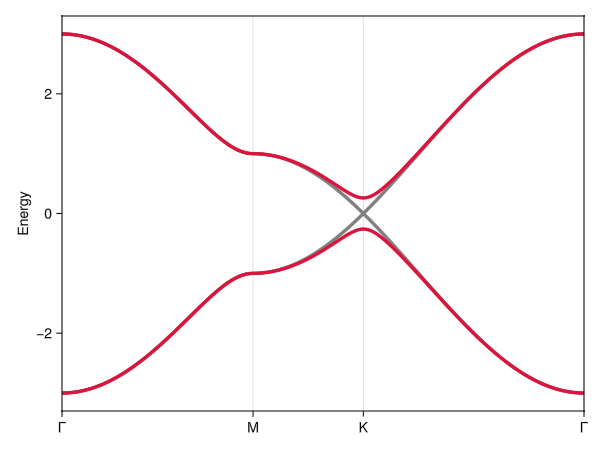
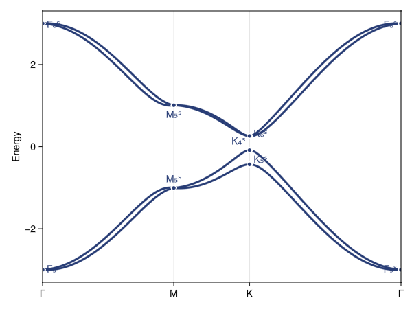

Spinful models
So far, we have built models from spinless (i.e., integer spin) band representations. Spin–orbit coupled electrons instead require spinful (i.e., half-integer spin) band representations that involve the double space group and its representations. In Crystalline.jl, these are obtained by passing spinful = Val(true) to bandreps; from there, building a model works as usual, via tb_hamiltonian.
Relative to the spinless setting, the main new ingredient is that time-reversal symmetry, $\mathcal{T}$, squares to $\mathcal{T}^2 = −1$ for spinful particles (as opposed to $\mathcal{T}^2 = +1$ for spinless particles), which pairs states into Kramers partners. Below, we first explain how Kramers partners appear in a model, using the simplest possible example, and then build a spin–orbit coupled model of graphene.
Crystalline.jl does not yet provide spinful band representations in 1D and 2D. For now, a 2D model can instead be built from a 3D space group with the same in-plane symmetry, as we do for graphene below.
Kramers partners as pseudospin
We start with a single orbital in the unit cell of the space group P1 (⋕1), which has no symmetry except lattice translations and time-reversal symmetry:
using Crystalline, SymmetricTightBinding
brs = bandreps(1; spinful = Val(true)) # spinful band representations of P1 (⋕1)
pin_free!(brs, [1 => [0, 0, 0]]) # place the free 1a position at the origin
cbr = @composite brs[1] # (1a|AˢAˢ), 2 bands8-irrep CompositeBandRep{3} (spinful):
(1a|AˢAˢ) (2 bands)Since there are no spatial symmetries, the 2 bands of (1a|AˢAˢ) simply correspond to the spin-up and spin-down states of the orbital. The superscript ˢ denotes a spinful irrep, and "AˢAˢ" denotes a pair of 1D irreps "Aˢ" paired by time reversal.
The two orbitals are Kramers partners, i.e., time-reversal conjugates. Time reversal acts on them via $\mathcal{T} = \mathrm{i}\sigma_y K$ (with $K$ denoting complex conjugation), exactly as on the up and down states of a spin-½. We can think of them as pseudospin ↑ and ↓ states; when, as in all examples on this page, the pair comes from a single spinless orbital, they are just spin ↑ and ↓. Crystalline.jl returns the unitary part of $\mathcal{T} = \boldsymbol{\Gamma} K$, i.e., $\boldsymbol{\Gamma} = \mathrm{i}\sigma_y$, via timereversal_unitary[1]:
timereversal_unitary(brs[1].siteir)2×2 Matrix{Int64}:
0 1
-1 0Next, we build a model with on-site terms and hoppings along the first lattice vector $\mathbf{a}_1$:
tbm = tb_hamiltonian(cbr, [[0, 0, 0], [1, 0, 0]])5-term 2×2 TightBindingModel{3} (hermitian, spinful) over (1a|AˢAˢ), where zᵢ=exp(-2πik·δᵢ):
┌─
1. ⎡ 1 0 ⎤
│ ⎣ 0 1 ⎦
└─ (1a|AˢAˢ) self-term.
┌─
2. ⎡ z₁+z̄₁ 0 ⎤
│ ⎣ 0 z₁+z̄₁ ⎦
└─ (1a|AˢAˢ) self-term. δ₁=[1,0,0]
┌─
3. ⎡ 0 -z₁+z̄₁ ⎤
│ ⎣ z₁-z̄₁ 0 ⎦
└─ (1a|AˢAˢ) self-term. δ₁=[1,0,0]
┌─
4. ⎡ iz₁-iz̄₁ 0 ⎤
│ ⎣ 0 -iz₁+iz̄₁ ⎦
└─ (1a|AˢAˢ) self-term. δ₁=[1,0,0]
┌─
5. ⎡ 0 iz₁-iz̄₁ ⎤
│ ⎣ iz₁-iz̄₁ 0 ⎦
└─ (1a|AˢAˢ) self-term. δ₁=[1,0,0]Terms 1 and 2 are the on-site energy and an ordinary, spin-independent hopping: they are diagonal in pseudospin and equal for ↑ and ↓. Terms 3–5 are spin-dependent hoppings, i.e., spin–orbit coupling: they are proportional to $\sin(2\pi k_1)$ times $\sigma_y$, $\sigma_z$, and $\sigma_x$, respectively. Time-reversal symmetry, $\mathbf{H}(-\mathbf{k}) = \boldsymbol{\Gamma} \mathbf{H}^*(\mathbf{k}) \boldsymbol{\Gamma}^\dagger = \mathrm{i}\sigma_y \mathbf{H}^*(\mathbf{k}) (\mathrm{i}\sigma_y)^\dagger$, requires spin-dependent terms to be odd in k, and spin-independent terms to be even.
As a result, the spin–orbit coupling terms vanish at time-reversal invariant momenta (TRIMs), i.e., at k-points where $\mathbf{k} \equiv -\mathbf{k}$, such as $k_1 = 0$ and $k_1 = 1/2$. This is simply Kramers' theorem: at TRIMs, every band is (at least) doubly degenerate:
ptbm = tbm([0, 1, 0.3, 0.2, 0.1])
ks = range(-1/2, 1/2, 201)
kvs = [[k₁, 0, 0] for k₁ in ks]
Es = spectrum(ptbm, kvs)
using GLMakie
axis = (; xlabel = rich("k", font=:italic) * subscript("1"), ylabel = "Energy", xticks = [-1/2, 0, 1/2])
lines(ks, Es[:, 1]; color = :royalblue, axis)
lines!(ks, Es[:, 2]; color = :royalblue)
Adding inversion symmetry
If we add inversion symmetry, moving to the space group P$\overline{1}$ (⋕2), the spin–orbit coupling terms of this model are forbidden:
brs′ = bandreps(2; spinful = Val(true))
cbr′ = @composite brs′[end] # (1a|AgˢAgˢ), 2 bands
tb_hamiltonian(cbr′, [[0, 0, 0], [1, 0, 0]])2-term 2×2 TightBindingModel{3} (hermitian, spinful) over (1a|AgˢAgˢ), where zᵢ=exp(-2πik·δᵢ):
┌─
1. ⎡ 1 0 ⎤
│ ⎣ 0 1 ⎦
└─ (1a|AgˢAgˢ) self-term.
┌─
2. ⎡ z₁+z̄₁ 0 ⎤
│ ⎣ 0 z₁+z̄₁ ⎦
└─ (1a|AgˢAgˢ) self-term. δ₁=[1,0,0]Inversion acts trivially on the (1a|AgˢAgˢ) orbitals (they are even, "g", under inversion), so inversion requires $\mathbf{H}(-\mathbf{k}) = \mathbf{H}(\mathbf{k})$. Combined with time reversal, $\mathbf{H}(-\mathbf{k}) = \mathrm{i}\sigma_y \mathbf{H}^*(\mathbf{k}) (\mathrm{i}\sigma_y)^\dagger$, this requires $\mathbf{H}(\mathbf{k}) = \sigma_y \mathbf{H}^*(\mathbf{k}) \sigma_y$. Writing $\mathbf{H}(\mathbf{k}) = h_0(\mathbf{k})\boldsymbol{1} + \mathbf{h}(\mathbf{k})\cdot\boldsymbol{\sigma}$ and using $\sigma_y \boldsymbol{\sigma}^* \sigma_y = -\boldsymbol{\sigma}$, we find $\mathbf{h}(\mathbf{k}) = \mathbf{0}$: so $\mathbf{H}(\mathbf{k}) = h_0(\mathbf{k})\boldsymbol{1}$, and the two bands are degenerate at every k-point.
This holds for any spinful model with both inversion and time-reversal symmetry, and every band is then doubly degenerate at every k-point. Intuitively, inversion maps a state at (k, ↑) to (−k, ↑) (spin is unchanged by inversion), and time reversal maps that to (k, ↓): so the two have the same energy. More precisely, the combination of inversion and time reversal is an antiunitary symmetry that maps k to itself and squares to −1, so Kramers' theorem applies at every k-point. Spin–orbit coupling is not forbidden by inversion in general (see also the Kane–Mele term below)[2], but it cannot remove this requirement of double degeneracy at every k-point: that requires breaking inversion or time reversal.
Kane–Mele model
As a more involved example, we next build a spinful version of graphene: the Kane–Mele model[3]. The spinless graphene model of the tutorial is built from p<sub>z</sub> orbitals at the 2b Wyckoff position of plane group p6mm (⋕17), transforming as the site-symmetry irrep A<sub>1</sub>. Here, we use instead the 3D space group P6mm (⋕183), which has the same in-plane symmetry.[4] Adding spin, the p<sub>z</sub>↑ and p<sub>z</sub>↓ orbitals transform jointly as the 2D site-symmetry irrep E₁ˢ:
sgnum = 183
brs = bandreps(sgnum; spinful = Val(true))6-element Collection{BandRep{3}} for ⋕183 (P6mm) over 14 irreps (spinful w/TR):
─────┬────────────────────────────
│ 3c 2b 2b 1a 1a 1a
│ Eˢ Eˢ E₁ˢ E₃ˢ E₂ˢ E₁ˢ
─────┼────────────────────────────
Γ₇ˢ │ 1 2 · 1 · ·
Γ₈ˢ │ 1 · 1 · 1 ·
Γ₉ˢ │ 1 · 1 · · 1
A₇ˢ │ 1 2 · 1 · ·
A₈ˢ │ 1 · 1 · 1 ·
A₉ˢ │ 1 · 1 · · 1
H₄ˢ │ 1 · 1 1 · ·
H₅ˢ │ 1 · 1 1 · ·
H₆ˢ │ 2 2 1 · 1 1
K₄ˢ │ 1 · 1 1 · ·
K₅ˢ │ 1 · 1 1 · ·
K₆ˢ │ 2 2 1 · 1 1
L₅ˢ │ 3 2 2 1 1 1
M₅ˢ │ 3 2 2 1 1 1
─────┼────────────────────────────
μ │ 6 4 4 2 2 2
─────┴────────────────────────────The 2b position of P6mm is [1/3, 2/3, z], with a free z-coordinate, which we set to zero:
pin_free!(brs, [3 => [0, 0, 0]]) # set the free `z` coordinate of `position(brs[3])` to zero
cbr = @composite brs[3]14-irrep CompositeBandRep{3} (spinful):
(2b|E₁ˢ) (4 bands)The model has 4 orbitals, ordered by site and then by pseudospin:
orbital index: 1 2 3 4
site: 1 1 2 2
pseudospin: ↑ ↓ ↑ ↓Here, the pseudospin states are spin ↑ and ↓ along z. A nonzero matrix element $H_{ij}(\mathbf{k})$ thus conserves pseudospin if $i$ and $j$ are both odd or both even, and flips it otherwise. We include on-site terms and hoppings up to next-nearest neighbors (the first 6 terms):
tbm = tb_hamiltonian(cbr, [[0, 0, 0], [1, 0, 0]])[1:6]6-term 4×4 TightBindingModel{3} (hermitian, spinful) over (2b|E₁ˢ), where zᵢ=exp(-2πik·δᵢ):
┌─
1. ⎡ 1 0 0 0 ⎤
│ ⎢ 0 1 0 0 ⎥
│ ⎢ 0 0 1 0 ⎥
│ ⎣ 0 0 0 1 ⎦
└─ (2b|E₁ˢ) self-term.
┌─
2. ⎡ 0 0 0 1.155iz̄₁ + (1.0-0.577i)z̄₂ + (-1.0-0.577i)z₃ ⎤
│ ⎢ 0 0 1.155iz̄₁ + (-1.0-0.577i)z̄₂ + (1.0-0.577i)z₃ 0 ⎥
│ ⎢ 0 -1.155iz₁ + (-1.0+0.577i)z₂ + (1.0+0.577i)z̄₃ 0 0 ⎥
│ ⎣ -1.155iz₁ + (1.0+0.577i)z₂ + (-1.0+0.577i)z̄₃ 0 0 0 ⎦
└─ (2b|E₁ˢ) self-term. δ₁=[1/3,-1/3,0], δ₂=[1/3,2/3,0], δ₃=[2/3,1/3,0]
┌─
3. ⎡ 0 0 -iz̄₁-iz̄₂-iz₃ 0 ⎤
│ ⎢ 0 0 0 iz̄₁+iz̄₂+iz₃ ⎥
│ ⎢ iz₁+iz₂+iz̄₃ 0 0 0 ⎥
│ ⎣ 0 -iz₁-iz₂-iz̄₃ 0 0 ⎦
└─ (2b|E₁ˢ) self-term. δ₁=[1/3,-1/3,0], δ₂=[1/3,2/3,0], δ₃=[2/3,1/3,0]
┌─
4. ⎡ z₁+z̄₁+z₂+z̄₂+z₃+z̄₃ 0 0 0 ⎤
│ ⎢ 0 z₁+z̄₁+z₂+z̄₂+z₃+z̄₃ 0 0 ⎥
│ ⎢ 0 0 z₁+z̄₁+z₂+z̄₂+z₃+z̄₃ 0 ⎥
│ ⎣ 0 0 0 z₁+z̄₁+z₂+z̄₂+z₃+z̄₃ ⎦
└─ (2b|E₁ˢ) self-term. δ₁=[1,0,0], δ₂=[0,1,0], δ₃=[1,1,0]
┌─
5. ⎡ 0 (1.0-0.577i)z₁ + (-1.0+0.577i)z̄₁ + (-1.0-0.577i)z₂ + (1.0+0.577i)z̄₂-1.155iz₃+1.155iz̄₃ 0 0 ⎤
│ ⎢ (-1.0-0.577i)z₁ + (1.0+0.577i)z̄₁ + (1.0-0.577i)z₂ + (-1.0+0.577i)z̄₂-1.155iz₃+1.155iz̄₃ 0 0 0 ⎥
│ ⎢ 0 0 0 (-1.0+0.577i)z₁ + (1.0-0.577i)z̄₁ + (1.0+0.577i)z₂ + (-1.0-0.577i)z̄₂+1.155iz₃-1.155iz̄₃ ⎥
│ ⎣ 0 0 (1.0+0.577i)z₁ + (-1.0-0.577i)z̄₁ + (-1.0+0.577i)z₂ + (1.0-0.577i)z̄₂+1.155iz₃-1.155iz̄₃ 0 ⎦
└─ (2b|E₁ˢ) self-term. δ₁=[1,0,0], δ₂=[0,1,0], δ₃=[1,1,0]
┌─
6. ⎡ -iz₁+iz̄₁-iz₂+iz̄₂+iz₃-iz̄₃ 0 0 0 ⎤
│ ⎢ 0 iz₁-iz̄₁+iz₂-iz̄₂-iz₃+iz̄₃ 0 0 ⎥
│ ⎢ 0 0 iz₁-iz̄₁+iz₂-iz̄₂-iz₃+iz̄₃ 0 ⎥
│ ⎣ 0 0 0 -iz₁+iz̄₁-iz₂+iz̄₂+iz₃-iz̄₃ ⎦
└─ (2b|E₁ˢ) self-term. δ₁=[1,0,0], δ₂=[0,1,0], δ₃=[1,1,0]Since there are no hoppings along z, the model describes decoupled graphene layers. The terms are:
- On-site energy.
- Nearest-neighbor hopping that flips pseudospin: the Rashba spin–orbit coupling. Its complex coefficients (e.g., 1.155 = 2/√3) encode the bond-direction dependence of the Rashba coupling.
- Nearest-neighbor hopping that conserves pseudospin: the usual graphene hopping.
- Next-nearest-neighbor hopping that conserves pseudospin, equal for ↑ and ↓: the usual next-nearest-neighbor hopping.
- Next-nearest-neighbor hopping that flips pseudospin: a longer-range Rashba-like term.
- Next-nearest-neighbor hopping that conserves pseudospin, with opposite signs for ↑ and ↓ (and for the two sites): the Kane–Mele spin–orbit coupling.
Term 3 is the ordinary, spin-independent graphene hopping, but written in a basis where the ↑ and ↓ orbitals of site 2 carry extra phases relative to those of site 1. These phases come from how the orbitals of site 2 are defined: as the images of the orbitals of site 1 under a symmetry operation that maps site 1 to site 2. For our band representation, this operation is:
g = cosets(group(brs[3]))[2] # maps site 1, [1/3, 2/3, 0], to site 2, [2/3, 1/3, 0]{2₀₀₁|1,1,0} ─────────────── (-x+1,-y+1,z)
┌ -1 0 0 ╷ 1 ┐
│ 0 -1 0 ┆ 1 │ ┌ -i 0 ┐
└ 0 0 1 ╵ 0 ┘, └ 0 i ┘The rightmost matrix is its SU(2) part, i.e., its action on spin: $-\mathrm{i}\sigma_z$. The operation leaves the p<sub>z</sub> orbital itself unchanged, so the ↑ and ↓ orbitals of site 2 simply acquire phases −i and +i relative to those of site 1. Collecting these phases in a diagonal matrix $\mathbf{U} = \mathrm{diag}(1, 1, -\mathrm{i}, +\mathrm{i}) = \boldsymbol{1}_2 \oplus (-\mathrm{i}\sigma_z)$, with one entry per orbital (in the order above), term 3 equals $\mathbf{U}^\dagger [\mathbf{H}^{\text{spinless}}(\mathbf{k}) \otimes \boldsymbol{1}_2] \mathbf{U}$, where $\mathbf{H}^{\text{spinless}}(\mathbf{k}) \otimes \boldsymbol{1}_2$ is the spinless graphene hopping of the tutorial, repeated for ↑ and ↓, and where $\mathbf{U}$ rotates to our orbital frame. Only matrix elements between site 1 and site 2 pick up phases; since the phases amount to a choice of basis, they do not change the spectrum.
Time reversal acts on the full model by $\mathbf{H}(-\mathbf{k}) = \boldsymbol{\Gamma}\mathbf{H}^*(\mathbf{k})\boldsymbol{\Gamma}^\dagger$, with $\boldsymbol{\Gamma}$ a Kronecker product of the identity over the sites and $\mathrm{i}\sigma_y$ over the pseudospin of each site: here, $\boldsymbol{\Gamma} = \boldsymbol{1}_2 \otimes \mathrm{i}\sigma_y$. (For a model with several band representations, $\boldsymbol{\Gamma}$ is block-diagonal, with one such block for each.) We can verify this for a random set of amplitudes:
using LinearAlgebra
Γ = kron(I(2), timereversal_unitary(brs[3].siteir))
ptbm = tbm(randn(6))
k = [0.1, 0.2, 0.0]
H₊, H₋ = copy(ptbm(k)), copy(ptbm(-k)) # `copy`, since `ptbm` reuses its output buffer
H₋ ≈ Γ * conj(H₊) * Γ'trueBand structures
Since the model is independent of $k_3$, we restrict the k-path to the $k_3 = 0$ plane, via Brillouin.jl:
using Brillouin
Rs = directbasis(sgnum)
kp = irrfbz_path(sgnum, Rs)
kp = KPath(kp.points, [[:Γ, :M, :K, :Γ]], kp.basis, kp.setting) # in-plane part of path
kpi = interpolate(kp, 200)With only the usual graphene hopping (term 3), we recover graphene's Dirac cones at K, now with every band doubly degenerate (gray). Adding the Kane–Mele term (term 6) opens a gap at K (red), turning the model into a quantum spin Hall insulator[3]:
Es_graphene = spectrum(tbm([0, 0, 1, 0, 0, 0]), kpi) # nearest-neighbor coupling only
Es_KM = spectrum(tbm([0, 0, 1, 0, 0, 0.05]), kpi) # + Kane-Mele SOC
plot(kpi, Es_graphene, Es_KM; color = [:gray, :crimson])
Both band structures remain doubly degenerate everywhere: terms 3 and 6 are also allowed in inversion-symmetric, free-standing graphene, so the argument from P$\overline{1}$ applies. The Rashba term (term 2), in contrast, breaks the z-mirror (and hence inversion) and splits the bands – except at the TRIMs Γ and M, where Kramers' theorem keeps them degenerate. At K, which is not a TRIM, the 4 bands split into two singlets (K₄ˢ and K₅ˢ) and a doublet (K₆ˢ):
ptbm = tbm([0, 0.05, 1, 0, 0, 0.05]) # Kane-Mele and Rashba SOC
plot(kpi, spectrum(ptbm, kpi); annotations = collect_irrep_annotations(ptbm))
- 1More generally, for a site with a 2n-dimensional site-symmetry irrep, orbitals i and i+n are Kramers partners, and
timereversal_unitaryreturns $\boldsymbol{\Gamma} = \mathrm{i}\sigma_y \otimes \boldsymbol{1}_n$. For spinless particles, $\boldsymbol{\Gamma} = \boldsymbol{1}$. - 2For example, a model with two orbitals at the 1a position, one even and one odd under inversion (
@composite brs′[end] + brs′[end-1], i.e., $(1a|A_g^sA_g^s) + (1a|A_u^sA_u^s)$), has a nearest-neighbor spin–orbit term $\propto \sin(2\pi k_1)$ that couples the two orbitals while flipping pseudospin. Still, every band remains doubly degenerate. - 3C.L. Kane & E.J. Mele, Quantum Spin Hall Effect in Graphene, Phys. Rev. Lett. 95, 226801 (2005).
- 4Free-standing graphene is also symmetric under the mirror z → −z, giving the space group P6/mmm (⋕191). P6mm lacks this mirror, as e.g., for graphene on a substrate or in a perpendicular electric field. This is what allows the Rashba term below.